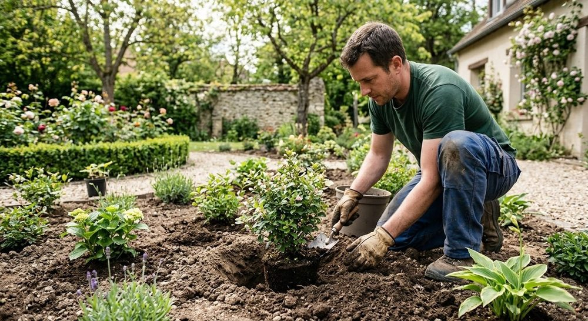
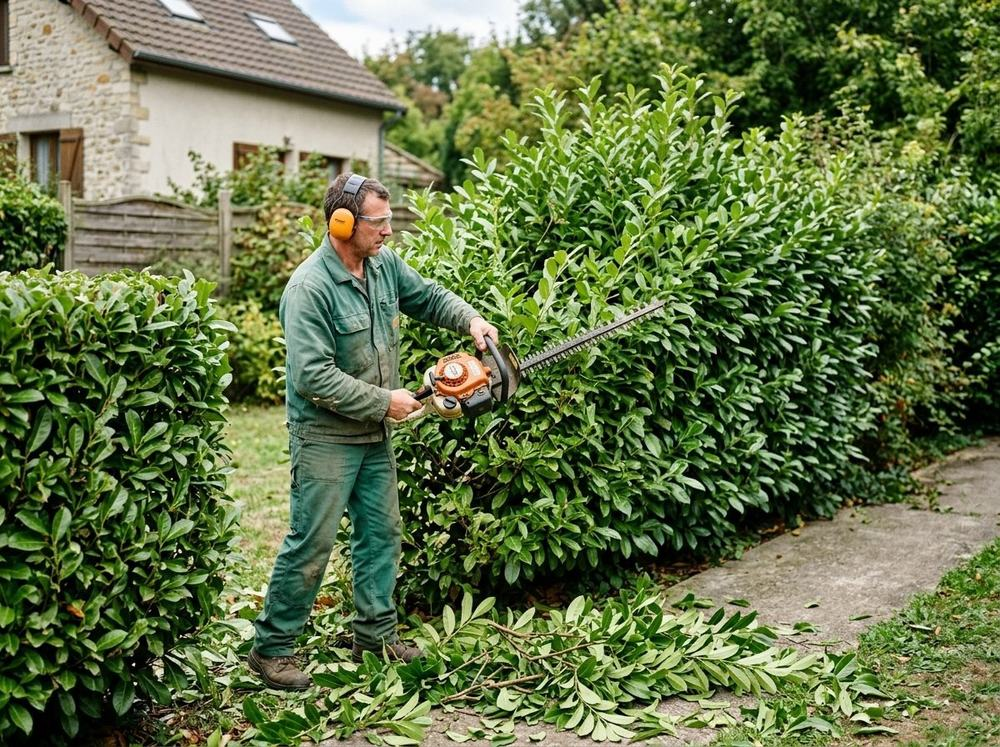
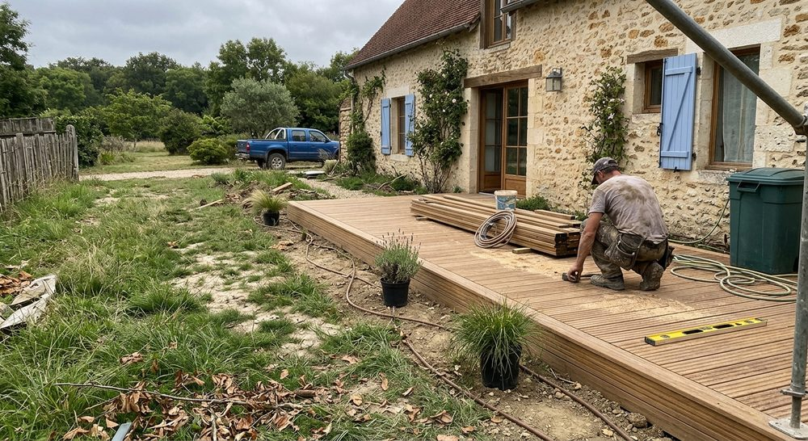

Prestations
Aménagement, création et entretien de jardins à Maurecourt
Décrivez votre jardin et votre projet : nous préparons une réponse adaptée.




01 · Entretien
Entretien de jardin
Pelouse, haies, massifs : un entretien adapté à votre terrain.
Sujets à aborder avec nous :
- Pelouse et tonte
- Haies et arbustes
- Massifs et plantations

02 · Aménagement
Aménagement paysager
Terrasses, allées, murets : nous étudions votre projet d'aménagement avec vous.
Sujets à aborder avec nous :
- Terrasses et circulations
- Allées et revêtements extérieurs
- Murets et ouvrages de pierre
Les photos illustrent des types de travaux ; ce ne sont pas des réalisations d'Alain Vico.

03 · Création
Création d'espaces verts
Un jardin à créer ou à repenser ? Nous étudions votre projet à partir de votre terrain.
- Pelouse, massifs et plantations
- Un tracé adapté à la maison
- Un projet étudié dans son ensemble
Votre demande
Quelle prestation vous correspond ?
Décrivez votre jardin : nous vous aidons à préciser votre demande.